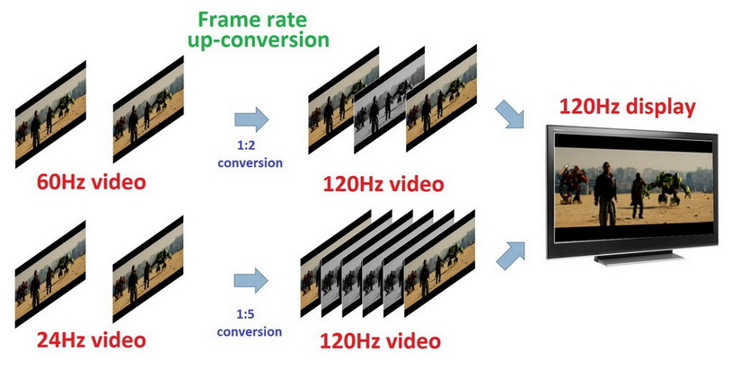
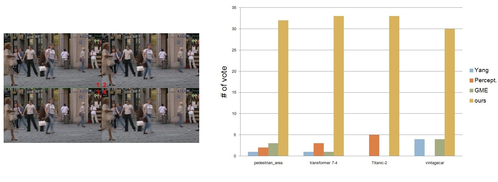

Frame Rate Up-Conversion
Frame rate up-conversion is a process that converts original video to higher frame rate with respect to its true motion of objects between frames.
Split Video Comparison
These videos have two parts: the lower part is the original 24Hz frames of video; the upper part is the 1:5 up-converted 120Hz frames generated by proposed algorithm. Since most of LCDs of computers are 60Hz, and in order to emphasize the robustness of the algorithm and the difference of lower and upper parts, the videos are played in half speed (60Hz).
Robustness on Complex Scene
Here shows some 1:5 up-converted 120Hz of complex scenes. The video is also played in half speed (60Hz).
Subjective Evaluation Samples
This video shows some sample images of subjective evaluation of proposed algorithm to other algorithms. The subjects vote their favorite frame sequences generated by up-conversion algorithms and randomly arranged. In the video I locate some artifacts of other algorithms and the same regions of proposed algorithm. Please play this video in 1080p to see more details.
Here is the full version test data: Download
(Note that I indicate the proposed algorithm by blue-circle which the original evaluation don't have)